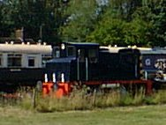
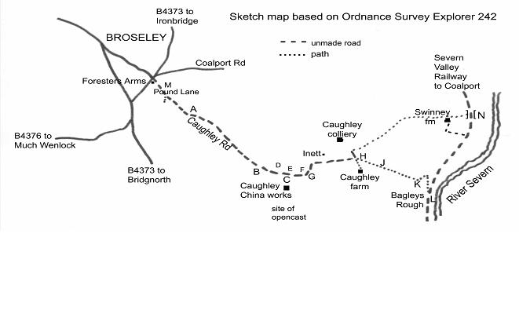

Exploring TelfordIn the Footsteps of Bertram Baxterby John WooldridgeThis page contents © John Wooldridge 2007Caughley Railway, Shropshire |
 |
At Caughley (1) a pottery had been working since at least 1751. In 1772 Thomas Turner came from Worcester and rebuilt the pottery as a china works. At this date Caughley was a busy area: coal mines, which Turner later leased, were already well established. Established too was a network of tramroads linking the mines to the River Severn which were then used to bring clay up from the river wharf to the china works. John Rose of Coalport took over the works in 1789 and production continued until 1814 when production moved to Coalport and the china works were demolished. In 1964 opencast work began on and around the site of the china works and clay and coal are still being extracted (March 2008); as a result most of the archaeological remains have been destroyed. Nearby, Caughley Colliery was worked from the 18th through to the 20th century. In 1825 it was supplying coal to Broseley Tileries; earlier it may well have supplied coal to the china works.
Written references to Caughley Railway are fragmentary. It is not shown on the 1795 Estate Map and not mentioned in Bertram Baxter's Stone Blocks and Iron Rails and I have found no references to any technical details. However, the date 1780 has been associated with its opening and local tradition ascribes the name The Tramlines to the track NE of Caughley Farm. In addition, Savage and Smith's thesis (2) includes outline maps depicting tramroad routes in the Telford area: one of the maps, Tramroads in use before 1775, shows Caughley Railway running between the Severn and coal mines south of Caughley china works. An opening date earlier than 1780 would fit with Thomas Turner's establishment of a china works after 1772. A second map, Tramroads in use between 1776 and 1800, shows the same tramroad with a short branch from just north of Caughley Farm to Caughley Colliery.
|
The tramroad is best walked from the site of the china works, eastwards to the River Severn. Turn off the B4373 in Broseley at the Forester's Arms into Pound Lane, and follow it as it becomes the unmade/unnamed Caughley Road. When you pass beneath the overhead power lines at A you are crossing the line of the Tarbatch Dingle tramroad (3). Caughley Road is narrow with grassy verges and perhaps the most convenient roadside parking point is at G.R. SJ 689003 where the road widens at the vehicle entrance to the opencast workings B. From here walk SE along the unmade road, passing Caughley Cottage on your right. 150 metres past the cottage, in a gap in the hedge on your right, is a yellow brick monument 5 feet high, with a plaque commemorating Caughley China works C. The site of the works is behind the plaque in a field, now restored after opencast workings. Across the road in front of the monument is the site of Turner's Yard colliery. On the left, the rough ground in the trees D marks the site of a shaft which supplied coal to Broseley Tileries M in 1883. Immediately ahead, just across the small stream, one may be able to make out the faint imprint of a horse gin E, shown on the 1795 estate map. In the same field, to the right, is a pile of stones F filling a shaft (4) which supplied coal to Broseley Tileries via a tramroad in 1902. The line of this tramroad is faintly visible for over 50 metres, leaving the shaft and crossing the field to the NNW as far as the hedge (5). The Savage and Smith maps suggest that the Caughley tramroad crossed the brook, more or less at the point where the brook is now crossed by Caughley Road G. The road crosses the brook on a substantial, stone sided embankment which may have carried the tramroad. Southwards from here the tramroad entered the china works where opencast mining has destroyed all trace. Eastwards the line is thought to have run just north of east but there is no evidence on the ground to the south of Inett. The next possible parking spot (for one car only) is at the crossing of tracks H, the point where the tramroad makes its first appearance. But as public access ends at H, permission to follow the tramroad to the river should be requested from the Willey Estate office (tel. 01952 883946). The rutted track heading ESE is known locally as The Tramlines J. It descends gently, passing a pool on the right, near which is the site of Caughley Hall. The tramroad leads to Cockshot Coppice, at the edge of which is a game bird pen and a patch of bramble and fern. Here, in the growth, are the remains of a culvert K that carried the tramroad across a gulley – the start of the brook that runs down the valley. Recent ground slippage has exposed a fragment of one of the culvert's vertical walls, comprising six courses of roughly made (local) bricks of varying thicknesses, some yellow and others dull red/brown. It is the only non-earthwork artefact of the Caughley Railway that I have found and it will not survive many more winters. Immediately after the culvert, the tramroad bends sharply to the NE and descends at 1 in 8 on a narrow terrace beside a conifer plantation, while the brook falls even more steeply. After 100 metres the path describes a sharp bend of more than 90 degrees to the south, into the plantation and continues its descent, at a similar gradient for 250 metres to reach the Severn Valley Railway course at G.R. SJ 705000. A gradient of 1 in 8 would be hard work for men and horses but such a gradient was not unusual for tramroads in this area. Between the SVR course and the river is Malthouse L, of indeterminate age, with a bird bath decorated with fragments of Caughley porcelain in the garden. Of the wharf, probably just to the SE of Malthouse, there is no trace. Return to H by retracing one's steps. Alternatively one can walk NE along the SVR route, now an unmade road, passing on the left the access road to Swinney Farm, to arrive at the railway bridge across Tarbatch Dingle (3). Descend from the railway embankment and walk WSW up the rough, stony track on the south of the brook. It passes just to the north of Swinney Farm to arrive at H. Here a tramroad branch left the main tramroad. To follow it, walk NNW for 100 metres and where the unmade road bends sharply to the NE, continue walking to the NW into a grassy field which shows signs of old workings. Pass to the left of a small pool to reach the site of Caughley Colliery. A tramroad embankment can be seen between two hollows, indicating where limestone was worked (5). The embankment is 50 – 60 metres long and two feet high and is aligned NNW/SSE. The paucity of written records and the absence of a contemporary map on which the route is marked as a railway or tramroad, lead one to ask whether this was indeed a tramroad or a road. If it was a road then it was unusually well graded one, especially the incline through Bagleys Rough. Bringing clay-laden wagons up a 1 in 8 tramroad incline would present considerable difficulties but I would imagine that bringing clay up a 1 in 8 road would be even more difficult. |  | |